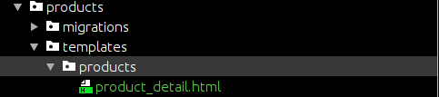
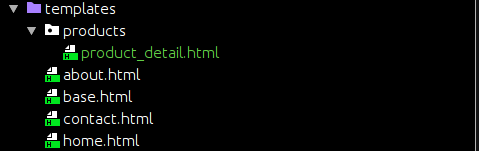

教学视频地址Python Django Web Framework Full Course for Beginnners
创建的model需要在admin.py中注册
1 | from .models import Product |
通过python shell添加模型
首先进入django的python shell
1 | python manage.py shell |
导入模型
1 | from products.models import Product |
查看已创建的Product对象
1 | Product.objects.all() |
创建一个新的对象
1 | Product.objects.create(title='New product', description="another one", price="19.2", summary="sweet") |
创建页面
创建app
1 | python manage.py startapp pagess |
在views.py中创建函数
1 | from django.shortcuts import render |
在mysite中的urls.py中加入path
1 | from django.contrib import admin |
views中函数的request参数
1 | def home_view(request, *args, **kwargs): |
我们这边设置request变量， 打印出来是<WSGIRequest: GET '/'>， 一个WSGIRequest，再打印出request.user， 结果是AnonymousUser
模板的使用
1 | def home_view(request, *args, **kwargs): |
第一个参数是request， 第二个是模板的名称， 第三个是需要传入的参数字典
如果需要使用模板，必须在settings.py中设置模板路径
1 | TEMPLATES = [ |
将'DIRS'设置为根目录下的template目录就可以在这个目录下创建模板的html文件了
模板的继承
创建模板html文件
这里我们创建base.html
1 |
|
注意，这里的block模块， 在子模板中再次引入可以替换block间的内容
1 | {% block content %} |
引入模板
这里我们在home.html中继续base.html
1 | {% extends 'base.html' %} |
模板的include
创建需要include的模板， 这里我们创建navbar.html
1 | <nav> |
在base.html中include进去
1 | {% include 'navbar.html' %} |
模板的上下文
首先在views.py中添加上下文参数
1 | def about_view(request, *args, **kwargs): |
在模板中使用格式化渲染
1 | {% extends 'base.html' %} |
filters
介绍几个重要的
save
1 | context = { |
假设有一段html源代码被传入， 如果直接用调用是不行的，没有被渲染出来
需要
1 | {{ my_html|safe}} |
需要添加save filter才能诶渲染
app中的template
在app中建立template可以使得这个app成为一个插件，在哪里都可以用
在app中建立template文件夹
这里我们的app是product， 所以在product文件夹下建立template文件夹
在建立的template文件夹中建立一个名称为app名字的文件夹
这里我们建立的是/products/template/products
—products
——-template
————products
—————–product_detail.html
在设置中给’APP_DIRS’赋值为True
1 | TEMPLATES = [ |
APP_DIRS决定了Djang是否会去寻找app中的template
如果说根目录下的template和app中的template有相同的路径，那么Django会先去找根目录下的template中的模板
比如
app下的 
根目录下 
这样的情况下，在view.py中设置render模板的路径为’/products/product_detail.html’Django会先选择/mysite/template/products/product_detail.html, 而不是/mysite/products/product_detail.html
forms
我们需要用户上传数据，这就需要forms
在app根目录下创建forms.py
1 | from django import forms |
注意这边的files如果有一个是没有设置defaul、不能是空的，那么用户提交的数据将会不完整， 无法进入数据库，导致错误发生
为表单提交创建新的view
1 | def product_create_view(request): |
其中
1 | form.save() |
是保存了数据之后刷新表单， 将输入框中的数据清空
创建html模板文件
在app目录下的/template/products中创建product_create.html
1 | {% extends 'base.html' %} |
添加到路由中
1 | path('create/', product_create_view, name="product_create"), |
创建生的Form
1 |
|
效果将会是
Django POST 和 GET
https://docs.djangoproject.com/en/2.2/ref/request-response/
在view.py中定义的函数，第一个参数是request
当有post和get请求时， 返回的request中有GET和POST两种属性
其实他们两个都是QueryDict对象，可以通过request.POST.get() 和request.GET.get()方法获取参数